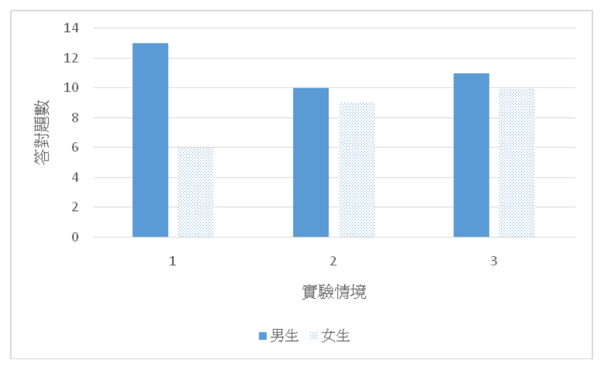

開卷有益 ／
臨床心理師 ／ 臨床心理學基礎 ／ 112 年112 年臨床心理師臨床心理學基礎試題與答案
這一頁是民國 112 年臨床心理師臨床心理學基礎的整份歷屆試題，共 40 題，題目與標準答案出自考選部「國家考試試題及測驗式試題答案」開放資料，其中 40 題附有詳解。以下逐題列出題幹、選項與答案；要計時作答或記錄成績，請用線上練習。
考選部原始場次代碼：1
線上作答這一科 →
全部 40 題
第 1 題
有關心理物理學的韋伯律（Weber's law），下列何項敘述最適當？
（A） 可以用內省法進行演繹來推導（B） 可視為科學研究歸納法之一例（C） 為科學研究化約主義之代表（D） 不具科學研究可否證性答案：（B）
詳解與考點 正解：韋伯律（Weber's law）描述的是「恰可覺察差異（just noticeable difference）與標準刺激強度成固定比例」這個規律，判準是這個規律在科學研究方法論上的性質定位。這個規律是研究者透過大量心理物理實驗資料的觀察與整理後歸納得出的通則，並非事先由理論演繹推導而來，因此可視為科學研究歸納法（induction）之一例，故選 B。
A：可以用內省法進行演繹來推導——韋伯律的建立依賴的是可重複測量的心理物理實驗資料，而非受試者對自身心理狀態的內省報告，也不是從既有理論命題演繹出來的結果，此敘述與韋伯律的方法論性質不符。
C：為科學研究化約主義（reductionism）之代表——化約主義指將複雜現象化約為更基礎層次的機制來解釋（如將心理現象化約為生理機制），韋伯律描述的是刺激強度與知覺差異閾之間的定量關係，並不涉及跨層次的化約解釋，此敘述定位錯誤。
D：不具科學研究可否證性——韋伯律作為一個具體可測量、可預測的定量通則，其預測（差異閾與標準刺激成定比）是可以透過實驗資料檢驗、也可能被推翻的，具有可否證性（falsifiability），此敘述與韋伯律的科學性質相反。
本題考點：韋伯律在科學方法論上的定位——它是由大量心理物理觀察資料歸納而得的定量通則，具有可否證性，既非內省演繹的產物，也不屬於化約主義將現象化約至更基礎層次的解釋方式。
第 2 題
下列何者為反應偏誤（response bias）？
（A） 參與者傾向以特定的反應作答（B） 實驗者對於特定參與者採取特定互動模式（C） 研究者取樣時忽略樣本間差異（D） 研究者對於參與者研究風險的判斷偏誤答案：（A）
詳解與考點 正解：判準是「反應偏誤（response bias）」這個概念的定義主體是誰。反應偏誤指的是參與者（受試者）在作答時傾向採用某種固定的反應方式（例如傾向同意、傾向選擇極端選項或傾向選擇中庸選項），這種傾向與題目的實質內容無關，而是源自受試者本身的作答習慣，故選 A。
B：實驗者對於特定參與者採取特定互動模式，描述的是偏誤來自實驗者這一方的行為（如實驗者期望效應），而非受試者的作答傾向，這屬於實驗者偏誤而非反應偏誤。
C：研究者取樣時忽略樣本間差異，描述的是抽樣過程中的方法學問題，屬於抽樣偏誤的範疇，同樣不是發生在受試者作答階段的反應偏誤。
D：研究者對於參與者研究風險的判斷偏誤，描述的是研究倫理審查層面研究者對風險評估可能出現的偏誤，與受試者作答時的反應傾向無關，不屬於反應偏誤。
本題考點：反應偏誤與其他偏誤類型的主體區分——反應偏誤的偏誤來源是參與者本身固定的作答傾向，須與實驗者偏誤（實驗者對待參與者的方式）、抽樣偏誤（研究者取樣方法）、風險判斷偏誤（研究者對倫理風險的評估）等偏誤來自「研究者」一方的偏誤類型區分開來。
第 3 題
下列何者不是自主神經系統（autonomic nervous system）的主要功能？
（A） 能依照個人主觀意志來控制手和腳的移動（B） 能控制消化系統的蠕動程度，影響消化效率（C） 能調控個人心跳的加快或者減慢（D） 能調控眼球中瞳孔的大小答案：（A）
詳解與考點 正解：本題問的是自主神經系統（autonomic nervous system, ANS）的功能範圍，判準在於「隨意／不隨意」的區分——ANS 屬不隨意控制系統，負責調節內臟、平滑肌與腺體的活動，故消化蠕動、心跳快慢與瞳孔大小皆屬其管轄；A 描述「依主觀意志控制手腳移動」屬骨骼肌的隨意運動，由體神經系統（軀體神經系統）負責，並非 ANS 的功能，因此為本題「不是」所指的答案。
B：能控制消化系統的蠕動程度、影響消化效率，屬 ANS 對平滑肌與腺體的不隨意調節，是其主要功能之一，非答案。
C：能調控心跳的加快或減慢，由交感與副交感神經系統共同負責，是 ANS 教科書上最典型的功能例證；分辨關鍵在於心跳雖可透過情緒或運動間接受影響，但其加減本身仍是不隨意的生理歷程，不屬主觀意志可直接操控，故非答案。
D：能調控瞳孔大小，同樣是交感／副交感神經對平滑肌（虹膜肌）的不隨意支配，屬 ANS 功能，非答案。
本題考點：自主神經系統的判準是「隨意／不隨意」而非「內臟／非內臟」；凡由骨骼肌執行、可依主觀意志發動的動作屬體神經系統，凡屬內臟、平滑肌與腺體的自動調節（心跳、瞳孔、消化）屬自主神經系統。
第 4 題
下列關於神經系統發育與基因影響的敘述，何者錯誤？
（A） 胚胎早期時許多細胞具有相當大的潛能，如果用人為方式移植到另外一個區域，常常可以成功地發育成為新的細胞種類（B） 學者Caspi發現MAOA（monoamine oxidase A）酵素的基因型與暴力行為有關。低-MAOA基因型的男生若童年時期經歷嚴重的家暴事件，長大之後較容易出現反社會或暴力傾向（C） 異卵雙胞胎的研究可以幫助我們了解環境對於行為的影響，因為他們的基因構造完全一樣，又由同樣的父母在同一個時間中撫養長大，可以互為對照組（D） 在小鼠身上學者已經成功地建立起各種基因改造技術，可以將某個特定基因完全拿掉，或者改造使其喪失功能，然後我們可以觀察動物產生的行為變化，藉此推論該基因與行為之間的關係答案：（C）
詳解與考點 正解：判準是雙胞胎研究法對「基因是否相同」的預設是否成立——C 稱異卵雙胞胎「基因構造完全一樣」，此描述有誤，異卵雙胞胎僅與一般手足相同，平均共享約一半基因，只有同卵雙胞胎才基因構造相同；此敘述把同卵雙胞胎的特性誤套到異卵雙胞胎身上，故為錯誤選項，選 C。
A：胚胎早期細胞具有相當大的潛能，人為移植到另一區域常能成功發育成新的細胞種類，此為胚胎發育可塑性的正確描述，非答案。
B：學者 Caspi 發現 MAOA（monoamine oxidase A）酵素的基因型與暴力行為有關，低-MAOA 基因型男生若童年時期經歷嚴重家暴，長大後較容易出現反社會或暴力傾向；此為基因與環境交互作用的經典研究，敘述正確，非答案。分辨關鍵在於：內容專有名詞多易使人懷疑，但其交互作用結論確實成立，不應誤判為錯誤敘述。
D：在小鼠身上已可用基因改造技術，將特定基因完全剔除或改造使其喪失功能，再觀察動物行為變化以推論該基因與行為的關係，此為基因剔除動物模型的正確描述，非答案。
本題考點：雙胞胎研究法的判準是基因共享比例——同卵雙胞胎基因相同、異卵雙胞胎與一般手足相同僅共享約一半基因；基因與環境的交互作用研究（如 MAOA × 童年受虐）與基因剔除動物模型皆屬正確的神經科學研究方法，不因專有名詞多而判為錯誤。
第 5 題
關於大腦初級運動皮質（primary motor cortex）的敘述，何者錯誤？
（A） 大腦初級運動皮質位置在中央溝前方的帶狀區域（B） 左手左腳的運動，主要由右半腦的運動皮質來控制（C） 臉部肌肉的控制，主要由位於左右半腦中線的初級運動皮質來負責（D） 身體上比較靠近的兩處肌肉，在大腦初級運動皮質上相對應的腦區也會比較靠近答案：（C）
詳解與考點 正解：關鍵在運動小人（motor homunculus）地圖上各身體部位對應的初級運動皮質（primary motor cortex）位置——C 稱臉部肌肉的控制主要由左右半腦中線的初級運動皮質負責，此描述有誤，中線區域對應的其實是腳與下肢，臉部肌肉對應的是外側下方區域，此敘述把兩者位置對調，故為錯誤選項，選 C。
A：大腦初級運動皮質位置在中央溝前方的帶狀區域，此為其解剖位置的正確描述，非答案。
B：左手左腳的運動主要由右半腦的運動皮質來控制，此為對側支配的基本原則，是正確敘述；分辨關鍵在於對側支配為運動皮質最基本的組織原則，不應因其直覺上「反常」而誤判為錯誤。
D：身體上比較靠近的兩處肌肉，在大腦初級運動皮質上相對應的腦區也會比較靠近，此為體感／運動對應的拓樸鄰近性，敘述正確，非答案。
本題考點：初級運動皮質的判準有二——解剖位置在中央溝前方帶狀區、身體部位對應遵循對側支配與拓樸鄰近性；運動小人地圖上臉部對應外側下方、腳與下肢對應內側中線，方向對調即為錯誤敘述。
第 6 題
外在的刺激會引發大腦相對應的神經活動，若實驗者想要研究精神病患在極短時間內做決策時所引發的神經活動與相關歷程，下列那一種神經科學研究技術最合適？
（A） 功能性核磁共振造影（functional magnetic resonance imaging）（B） 正子放射造影（positron emission tomography）（C） 穿顱磁刺激（transcranial magnetic stimulation）（D） 事件關連電位（event-related potential）答案：（D）
詳解與考點 正解：事件關連電位（event-related potential, ERP）以毫秒級精確度捕捉腦電變化，最適合追蹤研究「極短時間內」的決策歷程，判準是各技術的時間解析度而非空間解析度，故選 D。
A：功能性核磁共振造影（functional magnetic resonance imaging, fMRI）雖空間解析度佳、應用廣泛，但其訊號依賴血氧濃度相依（BOLD）反應，時間解析度僅達秒級，無法捕捉極短時間內的決策歷程，非答案。這是本題最強的誘答，因 fMRI 是神經科學研究最常見的技術，容易被直覺選中。
B：正子放射造影（positron emission tomography, PET）同樣依賴代謝性訊號，時間解析度低，不適合捕捉極短時間內的歷程，非答案。
C：穿顱磁刺激（transcranial magnetic stimulation, TMS）是一種干擾性刺激技術，用於暫時性地干預特定腦區功能以推論其因果角色，並非用來被動記錄神經活動的時間歷程，故非答案。
本題考點：選擇神經科學研究技術的判準是研究問題所需的解析度類型——時間解析度優先時選 ERP，空間解析度優先時選 fMRI/PET，因果操弄需求時選 TMS 一類的刺激技術；不可只憑技術的知名度或常見度作答。
第 7 題
哈洛（H. Harlow）發現小猴子會花較多時間親近裹著絨布的替代媽媽勝過提供奶瓶的鐵絲媽媽。下列何者與此發現有關？
（A） 氣質（temperament）（B） 分離焦慮（separation anxiety）（C） 心智理論（theory of mind）（D） 依附／依戀（attachment）答案：（D）
詳解與考點 正解：本題問的是哈洛（H. Harlow）恆河猴實驗所支持的概念，判準在於小猴的行為模式反映的是何種歷程——小猴花較多時間親近提供絨布觸感的替代媽媽而非只提供奶瓶的鐵絲媽媽，顯示接觸安慰（contact comfort）而非單純餵食才是依附形成的關鍵，故選 D 依附／依戀（attachment）。
A：氣質（temperament）指個體與生俱來、相對穩定的情緒與活動反應風格，與本實驗探討的照顧者—幼體連結歷程無關，非答案。
B：分離焦慮（separation anxiety）是依附形成後、幼體與依附對象分離時所出現的焦慮反應，屬依附研究中的相關現象；分辨關鍵在於本實驗的核心是接觸偏好如何促成依附「形成」，而非依附形成之後的分離情境反應，兩者屬依附歷程的不同階段，故非答案。
C：心智理論（theory of mind）指個體理解他人具有不同於自己的心理狀態的能力，屬社會認知範疇，與本實驗無關，非答案。
本題考點：Harlow 絨布媽媽實驗的核心貢獻是揭示接觸安慰是依附形成的關鍵條件而非餵食；依附相關的下游現象（如分離焦慮）與依附形成本身要分開辨識，題目問的是「與此發現有關」而非「依附之後會發生什麼」。
第 8 題
小佩在植物園指著蝙蝠說：「鳥！鳥！」，旁邊的媽媽跟小佩說：「這是蝙蝠不是鳥喔！」。於是小佩下次看到蝙蝠時就大叫：「蝙蝠！蝙蝠！」。根據皮亞傑（J. Piaget）的理論，下列何者最適合描述小佩習得了蝙蝠基模的過程？
（A） 調適（accommodation）（B） 去中心性（decentration）（C） 同化（assimilation）（D） 再建構（reconstruction）答案：（A）
詳解與考點 正解：判準在於既有基模是否被修改——小佩原以「鳥」基模稱呼蝙蝠，經媽媽糾正後修改既有基模、新建出「蝙蝠」這一類別以符合現實，此為調適（accommodation），故選 A。
B：去中心性（decentration）指個體能同時考慮多個向度或多方觀點，不再只固著於單一面向，與本題的基模改變歷程無關，非答案。
C：同化（assimilation）指以既有基模套用解釋新事物，小佩最初把蝙蝠叫成「鳥」正是同化的表現；分辨關鍵在於題目問的是小佩「習得蝙蝠基模」的過程，重點在基模本身的改變，而非用舊基模套用新事物，故此處應選調適而非同化，非答案。
D：再建構（reconstruction）並非皮亞傑理論中描述基模改變的核心概念，與本題歷程不符，非答案。
本題考點：皮亞傑（J. Piaget）理論中同化與調適的判準——同化是用既有基模套用新事物（維持基模不變），調適是既有基模因無法解釋新事物而被修改或新建（基模本身改變）；題目問「習得新基模的過程」時，答案指向調適而非同化。
第 9 題
青少年友誼關係的性別差異為：
（A） 女生比男生更強調工具性合作（B） 在出現友誼問題時，男生比女生出現更多關係攻擊（C） 男生比女生傾向在遇到心理問題時，詢問朋友的意見（D） 和友伴相處時，女生比較多自我揭露，男生比較多競爭答案：（D）
詳解與考點 正解：關鍵在既有研究結果的方向是否與題述相符——研究指出女生的友誼較重情感親密與自我揭露，男生的互動則較多競爭與活動取向，D 選項的描述與研究方向一致，故選 D。
A：女生比男生更強調工具性合作——此描述的方向與研究不符，工具性合作並非女生友誼的典型特徵，非答案。
B：關係攻擊（relational aggression）研究上較常見於女生而非男生，題述稱男生出現更多關係攻擊，方向講反了，非答案。
C：男生比女生傾向在遇到心理問題時詢問朋友意見——此描述方向亦與研究不符，遇心理問題主動求助朋友的傾向偏向女生而非男生，非答案。
本題考點：青少年友誼性別差異的判準是三組方向對照——女生偏向情感親密、自我揭露與求助傾向；男生偏向競爭與活動取向；關係攻擊在既有研究上與女生較相關；作答時須逐項核對題述方向是否與研究結果一致，而非只看是否「有可能發生」。
第 10 題
小美剛開始學英語時，學會在動詞後加上「ed」代表過去式，因此將「go」說成「goed」，「do」說成「doed」。下列何者最適合描述小美的錯誤？
（A） 再造（recast）（B） 過度延伸（over-extension）（C） 延伸不足（under-extension）（D） 過度規則化（over-regularization）答案：（D）
詳解與考點 正解：小美把規則變化的過去式規則（加 ed）過度套用到不規則動詞上，將 go 說成 goed、do 說成 doed，此為過度規則化（over-regularization），判準在於這是構詞規則的套用範圍過廣，故選 D。
A：再造（recast）指他人以正確形式重述兒童的錯誤發言，屬照顧者的語言輸入策略，與小美自身的錯誤類型無關，非答案。
B：過度延伸（over-extension）指詞彙語意層次的錯誤，例如把所有四腳動物都稱作「狗」，是把一個詞的指涉範圍過度擴大；分辨關鍵在於過度延伸發生在「詞彙意義」的層次，而小美的錯誤發生在「構詞規則」的層次（動詞過去式的規則套用），兩者不同，非答案。
C：延伸不足（under-extension）指詞彙指涉範圍過窄，例如只把自家的狗稱作「狗」，同樣屬詞彙語意層次的錯誤，與構詞規則無關，非答案。
本題考點：語言發展錯誤的判準要分層——詞彙語意層次的錯誤是過度延伸／延伸不足，構詞規則層次的錯誤（規則動詞詞尾套用到不規則動詞上）是過度規則化；兩層次錯誤現象相似（都是「規則套用過廣或過窄」）但作用對象不同，須先辨識錯誤發生在哪一層。
第 11 題
下列何者是物體辨識（object recognition）的理論？
（A） 反轉歷程模式（Reversed Process Model）（B） 成分辨識理論（Recognition by Component Theory）（C） 特徵整合論（Feature Integration Theory）（D） 賽局理論（Game Theory）答案：（B）
詳解與考點 正解：本題問的是何者屬於物體辨識（object recognition）的理論，判準在於該理論解釋的是「物體如何被辨識」還是其他歷程——成分辨識理論（Recognition by Component Theory，Biederman 提出）主張物體是由基本幾何元件（geons）組合而被辨識，屬物體辨識理論的核心代表，故選 B。
A：反轉歷程模式（Reversed Process Model）並非既有的物體辨識理論，屬虛構或無關名稱，非答案。
C：特徵整合論（Feature Integration Theory，Treisman 提出）處理的是注意力如何將個別特徵綁定為完整知覺，屬注意力理論而非物體辨識理論；分辨關鍵在於「特徵」一詞容易讓人聯想到物體的組成元件，但此理論解釋的是特徵如何被整合進入知覺，不是物體如何被辨識出來，非答案。這是本題最強的誘答。
D：賽局理論（Game Theory）是決策與策略互動的數學理論，與知覺歷程中的物體辨識無關，非答案。
本題考點：物體辨識理論的判準是理論解釋對象是否為「物體如何被組合辨識」——成分辨識理論以幾何元件（geons）組合說明物體辨識，特徵整合論說明的是注意力如何整合特徵而非辨識物體本身，兩者雖同涉及「特徵／成分」一詞但層次不同。
第 12 題
下列何種現象比較能夠反映出由下而上（bottom-up）的處理歷程？
（A） 字優效應（word superiority effect）（B） 語意觸發（semantic priming）（C） 史促普叫色效應（Stroop color naming effect）（D） 色彩後像（color afterimages）答案：（D）
詳解與考點 正解：判準是該現象是否屬於由下而上（bottom-up）處理，即是否由感官刺激本身驅動、不依賴既有知識經驗——色彩後像（color afterimages）源於視網膜受器（如視錐細胞）因持續刺激而產生的生理性疲勞，純由刺激的物理特性決定，不涉及知識介入，故選 D。
A：字優效應（word superiority effect）指字母在真實詞彙脈絡中比單獨出現時更容易被辨識，此現象依賴既有的詞彙知識促進辨識，屬由上而下（top-down）處理，非答案。
B：語意觸發（semantic priming）指先前呈現的語意相關詞會促進後續詞彙的處理速度，同樣依賴既有的語意知識網絡，屬由上而下處理，非答案。
C：史促普叫色效應（Stroop color naming effect）指自動化的文字閱讀歷程干擾了對顏色命名的作業，此效應涉及對文字意義的自動化知識處理，屬由上而下處理，非答案。
本題考點：由下而上與由上而下處理的判準是歷程是否依賴既有知識經驗——純由感官刺激的物理特性驅動、不涉知識介入者屬由下而上（如色彩後像的受器疲勞），涉及詞彙、語意或自動化閱讀知識介入者屬由上而下（字優效應、語意觸發、Stroop 效應皆屬此類）。
第 13 題
下列有關視覺通道（visual pathway）的描述，何者正確？
（A） 在中央小窩附近的柱狀細胞（rods）密度比周邊高（B） 右眼的訊息先傳到左半腦，然後再經由胼胝體傳送到右半腦（C） 訊息傳遞的先後順序為視網膜、視丘的側膝核、基礎視覺皮質區（D） 偵測物體位置以及移動的路徑為腹側路徑（ventral pathway）答案：（C）
詳解與考點 正解：關鍵在訊息傳遞的解剖路徑與受器分布是否符合實際——訊息依序經視網膜、視丘的外側膝狀核（lateral geniculate nucleus, LGN）、再到初級視覺皮質，此傳遞順序描述正確，故選 C。
A：在中央小窩附近密度較高的是柱狀細胞（rods）——此描述有誤，中央小窩密集分布的其實是錐狀細胞（cones），柱狀細胞則分布於視網膜周邊，此敘述把兩者的分布位置對調，非答案。
B：右眼的訊息先傳到左半腦、再經胼胝體傳送到右半腦——此描述不符視覺通道的解剖事實，右眼視野的一半投射至左半腦，另一半投射至右半腦，並非右眼整體訊息先送到單一半腦再跨越，非答案。
D：偵測物體位置以及移動的路徑為腹側路徑（ventral pathway）——此描述方向講反了，負責偵測物體位置與移動的是背側路徑（dorsal pathway，即「where」路徑），腹側路徑負責的是物體辨識（「what」路徑），非答案。
本題考點：視覺通道的判準有三——受器分布（中央小窩以錐狀細胞為主、周邊以柱狀細胞為主）、傳遞順序（視網膜→外側膝狀核→初級視覺皮質）、雙路徑分工（背側路徑處理位置與移動的「where」、腹側路徑處理物體辨識的「what」）；三者常被互換描述以製造誘答。
第 14 題
下列的物理向度和心理向度，那一個選項的配對是正確的？
（A） 頻率、音高（B） 振幅、音色（C） 頻寬、音量（D） 波長、音質答案：（A）
詳解與考點 正解：頻率對應的心理向度是音高（pitch），頻率越高、音高越高，判準是各物理量對應的知覺屬性，此配對正確，故選 A。
B：振幅（amplitude）對應的心理向度其實是音量（loudness）而非音色，此敘述配對錯誤；音色（timbre）對應的是波形或泛音結構，非答案。
C：頻寬對應音量的配對亦不正確，音量的物理對應是振幅而非頻寬，非答案。
D：波長對應音質的配對同樣不正確，此配對非既有聲音心理物理學的標準對應，非答案。
本題考點：聲音物理向度與心理向度的標準對應是判準——頻率對應音高、振幅對應音量、波形／泛音結構對應音色；作答時須逐一核對物理量與心理向度是否為既定的對應關係，不可因名詞相近（如頻率與頻寬、振幅與音色）而誤配。
第 15 題
人類的聽覺受器位於：
（A） 鼓膜（B） 耳蝸（C） 半規管（D） 鎚骨答案：（B）
詳解與考點 正解：本題問的是人類聽覺受器的位置，判準是何處真正進行機械振動轉換為神經訊號的感覺轉導——耳蝸內含柯蒂氏器（organ of Corti）與毛細胞，是真正的聽覺受器所在，故選 B。
A：鼓膜負責接收聲波振動並將其傳向中耳，屬傳音構造而非感覺受器，非答案。
C：半規管屬前庭系統，負責平衡覺而非聽覺，非答案。
D：鎚骨是中耳聽小骨之一，負責放大並傳遞振動，同屬傳音構造而非感覺受器，非答案。
本題考點：聽覺路徑上「傳音構造」與「感覺受器」的判準要分開——鼓膜與聽小骨（鎚骨、砧骨、鐙骨）只負責傳遞與放大振動，真正的聽覺受器是耳蝸內的柯蒂氏器與毛細胞；半規管雖同屬內耳構造，功能是平衡而非聽覺。
第 16 題
下列何者不是失眠的症狀？
（A） 無法入眠（B） 持續醒來（C） 會立即進入REM sleep（D） 很早醒來答案：（C）
詳解與考點 正解：判準是該現象是否屬於失眠常見的三種型態（入睡困難、睡眠維持困難、過早清醒）——會立即進入 REM sleep（快速動眼期睡眠）並非失眠的症狀，反而是猝睡症（narcolepsy）的特徵之一，故選 C。
A：無法入眠屬入睡困難，是失眠的典型症狀之一，非答案。
B：持續醒來屬睡眠維持困難，同屬失眠的典型症狀；分辨關鍵在於夜間反覆醒來仍屬「入睡後難以維持睡眠」的失眠表現，不應因看似「非典型」而誤判為非失眠症狀，非答案。
D：很早醒來屬過早清醒，亦為失眠的典型症狀之一，非答案。
本題考點：失眠的判準是三種型態——入睡困難、睡眠維持困難（持續醒來）、過早清醒；「睡眠起始即進入 REM sleep」屬猝睡症的特徵，不屬失眠症狀，兩者分屬不同睡眠障礙類別，作答時不可混淆。
第 17 題
老鼠在穿梭箱裡面燈光亮了就被電擊，後來一陣子燈光亮了電擊卻沒出現，於是牠的警覺、害怕反應開始下降。但一旦過了一段時間再度看到燈亮時，又會對燈光有很大的反應，此現象稱為：
（A） 操作制約（operant conditioning）（B） 二級制約（secondary conditioning）（C） 行為塑造（shaping）（D） 自然回復（spontaneous recovery）答案：（D）
詳解與考點 正解：關鍵在這是消弱（extinction）後的自發性重現而非新的學習——經消弱而減弱的制約反應，在休息一段時間後重新遇到制約刺激時會再度出現，此現象稱為自然回復（spontaneous recovery），故選 D。
A：操作制約（operant conditioning）指行為因後果（強化或懲罰）而改變頻率的學習歷程，本題描述的是古典制約情境下的消弱與回復，並非操作制約，非答案。
B：二級制約（secondary conditioning）指以已建立的制約刺激作為非制約刺激，進一步建立新的制約聯結，此為一種「疊加建立新聯結」的歷程；分辨關鍵在於本題描述的是既有制約反應消弱後自行重新出現，並未建立任何新的聯結，兩者性質不同，非答案。
C：行為塑造（shaping）指透過連續漸進地強化接近目標行為的反應來塑造新行為，與本題消弱後反應自行回復的現象無關，非答案。
本題考點：古典制約消弱（extinction）與自然回復（spontaneous recovery）的判準——制約反應因刺激不再配對而減弱稱消弱，經過一段時間的休息後，再次遇到制約刺激時反應重新出現（未經任何新訓練）稱自然回復；二級制約是建立新聯結的歷程，與消弱後的自發性重現屬不同概念。
第 18 題
下列有關學習的敘述，何者正確？
（A） 由於疾病或腦傷所導致的行為改變，這是一種學習（B） 學習會完全反映在外顯行為的改變上（C） 習慣化（habituation）是一種本能，不能稱為學習（D） 重複刺激同一部位會覺得越來越痛，這是一種學習答案：（D）
詳解與考點 正解：重複刺激同一部位會覺得越來越痛，屬敏感化（sensitization）現象，是經由重複經驗造成的行為改變，判準是該行為改變是否源於經驗而非生理損傷或天生本能，屬於學習，故選 D。
A：由疾病或腦傷所導致的行為改變並非經驗所致，不屬於學習的定義範疇，非答案。
B：學習未必完全反映在外顯行為的改變上，個體可能已習得某些知識或聯結卻未表現出來（例如潛在學習），此敘述過於絕對，非答案。
C：習慣化（habituation）是對重複出現、無害刺激的反應逐漸減弱的現象，是最基本的非聯結式學習之一，並非本能；此敘述把習慣化排除在學習之外，是錯誤的，非答案。
本題考點：學習的定義判準是「行為改變是否源於經驗」——敏感化與習慣化皆屬非聯結式學習、源於重複經驗，故算學習；疾病或腦傷造成的改變非經驗所致、不算學習；學習的結果不必然反映在外顯行為上，此三項判準常被互換描述以製造誘答。
第 19 題
先天在個體的學習上扮演重要的角色，例如在條件化學習中，必須配合個體對於刺激間的特定屬性有先天上的傾向，會較有利或不利後續的學習，這樣的特性稱為：
（A） 古典制約（classical conditioning）（B） 操作制約（operant conditioning）（C） 生物傾向（biological predisposition）（D） 生物變通性（biological flexibility）答案：（C）
詳解與考點 正解：本題問的是個體對刺激間特定屬性具有先天傾向、進而有利或不利後續條件化學習的特性稱為什麼，判準在於這是描述「先天傾向」本身的名稱而非學習的形式——此特性稱為生物傾向（biological predisposition），故選 C。
A：古典制約（classical conditioning）是學習的一種形式，描述中性刺激與非制約刺激配對後產生制約反應的歷程，並非用來描述先天傾向本身的特性名稱，非答案。
B：操作制約（operant conditioning）同樣是學習的一種形式，描述行為因後果而改變頻率的歷程，也不是描述先天傾向的特性名稱，非答案。
D：生物變通性（biological flexibility）並非用以描述題幹所指先天傾向現象的標準名稱，非答案。
本題考點：生物傾向（biological predisposition）的判準是「先天上對特定刺激屬性聯結的難易傾向」，例如味覺嫌惡學習中對味覺—疾病聯結的預備性即為典型例證；古典制約與操作制約是學習發生的形式類別，與描述先天傾向的特性名稱屬不同層次的概念，不可混用。
第 20 題
有關操作制約（operant conditioning）學習理論中的固定時距（fixed interval）強化策略之敘述，下列何者正確？
（A） 個體想要有效率地調控操作制約反應（operant response），必須能夠提升反應速度（B） 兩次操作制約反應之間必須至少間隔一定的次數，才會得到一次強化物（C） 經過長久訓練之後，個體的反應速率在時距剛開始的時候會比較低，在時距快要結束時反應速率會升高（D） 動物因為沒有時間觀念，所以無法學習這個強化策略答案：（C）
詳解與考點 正解：判準是固定時距（fixed interval, FI）強化策略下個體反應速率隨時距進程如何變化——經過長久訓練後，反應速率呈現「扇形（scallop）」型態，時距剛開始時反應速率較低，接近強化物即將發放的時間點時反應速率會升高，此描述正確，故選 C。
A：個體想有效率地調控操作制約反應（operant response），必須提升反應速度——此描述並非固定時距策略的特性，固定時距下反應速率的高低與強化物是否即將出現有關，而非單純提升反應速度即可提高效率，非答案。
B：兩次操作制約反應之間必須至少間隔一定的次數才會得到一次強化物——此描述其實是固定比率（fixed ratio）強化策略的特徵，需累積一定的反應「次數」才給予強化，與固定時距按「時間」計算強化的性質不同，此敘述把兩種強化排程混淆，非答案。分辨關鍵在於固定比率計次數、固定時距計時間，兩者不可互換描述。
D：動物因為沒有時間觀念所以無法學習這個強化策略——此描述不符事實，動物確實能學會依時距發放強化物的規律並調整反應型態，呈現前述扇形反應模式，非答案。
本題考點：固定時距強化策略的判準是反應速率隨時距進程呈扇形變化（時距初期低、接近發放時升高）；固定比率則依累積反應次數給予強化，兩種強化排程的判準（時間 vs 次數）常被互換描述以製造誘答，作答時須先辨識題述描述的是「次數」還是「時間」。
第 21 題
Peterson和Peterson（1959）讓參與者進行記憶作業，先聽到三子音，接著進行倒數作業3至18秒，最後要求報告出之前的三子音。關於此研究的發現與意涵，下列敘述何者錯誤？
（A） 研究發現隨著倒數時間的增長，參與者的回憶表現越差。若倒數了18秒，正確率幾乎趨近為零（B） 研究發現若僅僅倒數3秒，回憶率並不會受到顯著影響（C） 此研究顯示了複誦（rehearsal）對短期記憶（short-term memory）的重要性（D） 此研究的發現可由干擾（interference）會影響短期記憶的觀點來做解釋答案：（B）
詳解與考點 正解：關鍵在各敘述是否符合 Peterson 和 Peterson（1959）三子音記憶實驗的實際發現——B 稱「若僅僅倒數 3 秒，回憶率並不會受到顯著影響」，此描述有誤，實際上僅倒數 3 秒回憶率就已明顯下降，此敘述與實驗發現不符，故為錯誤選項，選 B。
A：隨著倒數時間的增長，參與者的回憶表現越差，若倒數了 18 秒，正確率幾乎趨近於零，此為該實驗的核心發現，敘述正確，非答案。
C：此研究顯示了複誦（rehearsal）對短期記憶（short-term memory）的重要性——倒數作業阻止受試者複誦三子音，導致遺忘迅速發生，顯示複誦對維持短期記憶的重要角色，敘述正確，非答案。
D：此研究的發現可由干擾（interference）會影響短期記憶的觀點來做解釋——遺忘的成因除了消退（decay，隨時間流逝）之爭外，亦可用倒數作業對三子音記憶造成的干擾來解釋，兩種觀點皆可援引此實驗，敘述正確，非答案；分辨關鍵在於本實驗常被引為支持消退的證據，但同時也可用干擾觀點解釋，並非只有單一種解釋方向成立。
本題考點：Peterson 與 Peterson 短期記憶遺忘實驗（Brown-Peterson 派典）的判準——短暫的倒數作業（如僅 3 秒）即已顯著降低回憶率，並非需要長時間干擾才會出現遺忘；複誦的阻斷與干擾／消退兩種理論觀點皆可解釋此遺忘現象，作答時須逐一核對敘述的方向（受影響程度、時間點）是否符合實際實驗數據。
第 22 題
有關短期記憶（short-term memory）與工作記憶（working memory）的比較，下列敘述何者正確？
（A） 工作記憶中子系統的功能與短期記憶的功能完全不重疊（B） 工作記憶的容量有個別差異，短期記憶的容量則無（C） 傳統的短期記憶是指訊息的暫存處，工作記憶則擴充至訊息處理的歷程（D） 工作記憶模型的發展是因為研究發現透過組集（chunking）可增加記憶的容量，而短期記憶則與組集無關答案：（C）
詳解與考點 正解：傳統的短期記憶（short-term memory）概念強調訊息的暫存處，工作記憶（working memory，Baddeley 提出）則將此概念擴充至涵蓋訊息的主動處理歷程，判準在於兩者理論定義的範圍差異，此描述正確，故選 C。
A：工作記憶中子系統的功能與短期記憶的功能完全不重疊——此描述過於絕對，工作記憶模型中的語音迴路（phonological loop）等子系統本就涵蓋短期儲存的功能，兩者並非完全不重疊，非答案。
B：工作記憶的容量有個別差異、短期記憶的容量則無——此敘述亦不正確，短期記憶的容量同樣存在個別差異，並非工作記憶獨有的特性，非答案。
D：工作記憶模型的發展是因為研究發現透過組集（chunking）可增加記憶的容量、而短期記憶則與組集無關——此描述不符事實，組集現象在傳統短期記憶研究中即已被發現與探討，並非工作記憶模型發展後才出現、也並非與短期記憶無關，非答案。
本題考點：短期記憶與工作記憶比較的判準——兩者的核心差異在於「暫存」與「主動處理歷程」的範圍擴充（工作記憶涵蓋短期記憶並加入處理歷程），而非容量有無個別差異、子系統是否完全不重疊、或組集現象是否只屬於其中一方；後三者皆為過度絕對化的錯誤描述。
第 23 題
學者A. Luchins著名的「水瓶問題（the water jar problem）」主要涉及下列那個效應？
（A） 育成效應（incubation effect）（B） 頓悟效應（insight effect）（C） 框架效應（framing effect）（D） 心向效應（mental set effect）答案：（D）
詳解與考點 正解：判準是「習得某解法後，面對可用更簡單方法的新題仍沿用舊解法」——這正是心向效應（mental set effect）的定義：學習者對先前成功的策略形成定勢，即使情境改變、有更簡便的路徑可用，仍傾向沿用原有解法。Luchins 的水瓶問題（the water jar problem）便是以連續多題可用同一複雜解法的題組，誘導受試者建立此定勢，再插入一題其實有更簡單解法者，觀察受試者是否仍固守舊策略，故選 D。
B：頓悟效應（insight effect）指解題歷程並非漸進嘗試，而是在某一刻突然領悟正確解法、豁然開朗；水瓶問題呈現的卻是相反的現象——受試者僵化沿用舊解法而非突然頓悟新解法，兩者在解題歷程的性質上恰好相反，是本題最強的誘答，分辨關鍵在於水瓶問題描述的是「沿用」而非「頓悟」的歷程。
A：育成效應（incubation effect）指暫時擱置問題、轉做其他事後，反而更容易想出解法，強調的是「醞釀」歷程對解題的助益，與水瓶問題所示的「定勢阻礙」方向不同，無關聯。
C：框架效應（framing effect）指同一訊息因表達方式（正面或負面陳述）不同而影響判斷與選擇，屬決策心理學的範疇，與水瓶問題探討的解題策略僵化無關。
本題考點：心向效應（mental set effect）的判準——受試者因先前成功經驗形成解題定勢，面對可用更簡單方法的新情境仍沿用舊策略；分辨關鍵在於此與頓悟效應（insight effect，突然領悟新解法）的解題歷程方向相反，育成效應（incubation effect）與框架效應（framing effect）則分屬不同的心理歷程，與定勢無關。
第 24 題
有關Saul Sternberg（1966）的記憶掃描（memory scanning）實驗，下列何者正確？
（A） 參與者正確回答"YES"的反應時間比正確回答"NO"的反應時間快（B） 實驗結果顯示了記憶掃描序列搜尋歷程的特性（C） 結果顯示在記憶中掃描的項目數量與反應時間的關係是非線性的（D） 實驗主要探討導致記憶偏誤的心理歷程答案：（B）
詳解與考點 正解：Sternberg（1966）記憶掃描（memory scanning）實驗的兩項核心發現，是反應時間隨記憶集（memory set）大小增加而呈線性上升，且正確回答"YES"與正確回答"NO"所需時間相近、並無顯著差異。這兩項發現共同支持受試者在提取記憶項目時採取的是序列、徹底型（serial exhaustive）搜尋歷程——即使已在記憶集中找到匹配項目，仍會把整個記憶集掃描完畢才作答，故選 B。
A：正確回答"YES"的反應時間比"NO"快——與實驗結果相反。徹底型搜尋（serial exhaustive search）不論匹配與否都會掃描完整個記憶集，因此"YES"與"NO"反應時間應大致相同；若是自我終止型搜尋（self-terminating search），"YES"才會因提早找到匹配項而較快，但這不是 Sternberg 該實驗的結論，是本題最強的誘答，分辨關鍵在於記住實驗結果是兩者相近而非"YES"較快。
C：記憶項目數量與反應時間的關係是非線性的——方向講反了，實驗結果呈現的是穩定的線性關係：記憶集每增加一個項目，反應時間便隨之等量增加，這正是序列搜尋歷程的證據之一。
D：實驗主要探討導致記憶偏誤的心理歷程——與實驗目的不符，Sternberg 記憶掃描實驗探討的是短期記憶提取時的搜尋歷程與速度，而非記憶偏誤或記憶扭曲的成因。
本題考點：Sternberg 記憶掃描（memory scanning）實驗的判準——反應時間與記憶集大小呈線性關係、"YES"與"NO"反應時間相近，兩者共同指向序列、徹底型（serial exhaustive）搜尋歷程；分辨關鍵在於區分徹底型與自我終止型（self-terminating）搜尋在"YES"反應時間上的預測差異。
第 25 題
會引發飽食感的荷爾蒙和能調節飽食感的下視丘部位分別為：
（A） 類生長素（ghrelin）；下視丘腹內側核（B） 類生長素（ghrelin）；外側下視丘（C） 瘦素（leptin）；下視丘腹內側核（D） 瘦素（leptin）；外側下視丘答案：（C）
詳解與考點 考點為飽食的荷爾蒙與下視丘調節。正解 C：瘦素（leptin）由脂肪分泌引發飽足感，下視丘腹內側核（VMH）為飽食中樞（受損致過食肥胖）。陷阱在外側下視丘（LH），那是攝食／飢餓中樞（受損致拒食），與飽食中樞相反；類生長素 ghrelin 則促進食慾而非飽足，方向皆相反。
第 26 題
驅力與生理恆定（homeostasis）和下列那個大腦部位的關係最為密切？
（A） 杏仁核（B） 海馬迴（C） 下視丘（D） 腦島答案：（C）
詳解與考點 正解：本題問的是驅力（drive）與生理恆定（homeostasis）調節在腦區層次的對應——判準是該腦區是否直接參與體溫、攝食、飲水、內分泌等生理變項的恆定維持與驅力產生。下視丘（hypothalamus）整合自主神經系統與內分泌系統的訊號，持續監控並調節這些生理指標使其維持在穩定範圍內，是驅力與生理恆定關係最密切的腦部構造，故選 C。
D：腦島（insula）涉及內感受（interoception）與厭惡等情緒經驗的處理，因其與身體狀態的知覺相關，容易被誤認也涉及生理恆定的調節，是本題最強的誘答，分辨關鍵在於腦島處理的是身體狀態的主觀感受與情緒評估，而非下視丘那樣直接執行恆定調節與驅力驅動的功能。
A：杏仁核（amygdala）主要涉及情緒歷程，尤其是恐懼與威脅相關的處理與制約學習，並非生理恆定調節的核心構造。
B：海馬迴（hippocampus）的核心功能在陳述性記憶的形成與空間記憶，與生理恆定的調節機制無直接關聯。
本題考點：驅力與生理恆定（homeostasis）的腦區判準——下視丘整合自主神經與內分泌訊號、直接調節體溫攝食飲水等生理變項；杏仁核主情緒（尤其恐懼）、海馬迴主記憶、腦島主內感受，三者皆非恆定調節的核心。
第 27 題
達爾文認為情緒是與生具有的特性；Ekman從表情照片辨認的一致性，主張人們具共同的基本表情。而根據後續研究，有關後天學習對情緒知覺的影響，下列敘述何者最適當？
（A） 不同種族的人，基本表情的表現方式不一致（B） 對同種族者的表情辨識，優於對不同種族者（C） 對不同種族者的臉孔辨識，優於對同種族者（D） 在多族群的同一社會中，弱勢族群的個體在辨識強勢族群個體之情緒時，較易出錯答案：（B）
詳解與考點 正解：判準是後續研究對達爾文先天論與 Ekman 跨文化一致性發現之後、關於「後天學習」如何影響情緒知覺的補充——研究一致發現存在同族偏誤：個體對與自己同種族者的表情辨識準確度，高於對不同種族者的辨識，這反映長期接觸同族臉孔所累積的知覺經驗會提升辨識效率，故選 B。
C：對不同種族者的臉孔辨識優於同種族者——方向講反了，同族偏誤指出的方向恰好相反，是本題最強的誘答，分辨關鍵在於記住「接觸經驗多的一方辨識較佳」，同族接觸經驗通常多於異族。
A：不同種族的人基本表情的表現方式不一致——與 Ekman 從表情照片辨認一致性所得出的跨文化共通結論相違背，基本表情的表現方式具有跨文化的一致性，這是 Ekman 研究的核心發現，並非後天學習造成的差異之處。
D：弱勢族群個體辨識強勢族群個體之情緒較易出錯——同族偏誤的效應在不同社會情境下強弱可能有別，但題幹所問的是後天學習對情緒知覺影響的最適當一般性描述，同族優於異族辨識才是研究普遍且穩定支持的結論，本選項將效應限定在特定的強弱勢族群關係上，過於片面且非研究的核心發現。
本題考點：後天學習對情緒知覺影響的判準——同族偏誤指個體對同種族者的表情辨識優於異種族者，源於接觸經驗的累積；基本表情的表現方式本身具跨文化一致性（Ekman 的先天論核心發現），不因後天學習而顯著不一致。
第 28 題
有關情緒（emotion）與心情（mood）的比較，下列何者錯誤？
（A） 情緒可區分為較明確的類別，心情則多以向度來區分（B） 情緒持續的時間較短，心情則持續較久（C） 引發情緒的原因較不明確，引發心情的原因則較為明確（D） 情緒包含完整的認知評估、生理變化、主觀經驗、表情、反應傾向等成分，心情則否答案：（C）
詳解與考點 正解：本題問的是情緒（emotion）與心情（mood）比較中何者錯誤——判準是兩者引發原因的明確程度，實際上與選項 C 的描述相反：情緒通常有明確、特定的引發對象或事件（如因某人某事而生氣），原因較為明確；心情則往往瀰漫、持續而原因較模糊，未必能指出單一觸發事件，選項 C 把兩者的原因明確度顛倒了，故為應選項。
A：情緒可區分為較明確的類別（如喜悅、憤怒、恐懼），心情則多以向度（如正向—負向、激動—平靜）來區分，此為情緒與心情在分類方式上的正確比較，非答案。
B：情緒持續的時間較短（通常數秒至數分鐘），心情則持續較久（可達數小時甚至數日），此為兩者在時間向度上的正確比較，非答案。
D：情緒包含完整的認知評估、生理變化、主觀經驗、表情、反應傾向等成分，心情則多半只呈現主觀感受的向度、缺乏情緒那樣完整而具體的成分組合，此為兩者在結構完整性上的正確比較，非答案。
本題考點：情緒與心情的辨析判準——分類方式（類別 vs 向度）、持續時間（短 vs 長）、引發原因明確度（明確 vs 模糊，此處常被誤植顛倒）、成分完整性（完整多成分 vs 單純主觀向度），四個向度須逐一對照，不可把原因明確度的方向記反。
第 29 題
受測者分別在三種不同情境中進行數學測驗，情境甲：受測者被告知將評估其數學能力；情境乙：以遊戲的形式呈現問題；情境丙：告知刻板印象威脅會導致的負向效應。下圖是實驗結果，請找出最適合的甲、乙、丙情境與長條圖1、2、3的配對：

（A） 甲：1；乙：2（B） 乙：1；丙：2（C） 丙：1；甲：3（D） 甲：2；丙：3本題送分，無標準答案
詳解與考點 本題經考選部公告一律給分。作答任一選項皆得分。原因是三個情境只有一個位置能由學理鎖死：甲明白告知要評估數學能力，是典型威脅激發程序，表現應最低；乙以遊戲形式呈現、威脅未啟動，丙事先說明威脅的負向效應、屬於再歸因式的去威脅操弄，兩者在文獻上同屬「威脅未造成損害」，孰高孰低並無定論。四個選項各只指定兩組配對，乙丙既可互換，即有一個以上選項同時站得住，故送分。以下假設長條依表現由高到低編號1至3；若編號方向相反，各選項成立與否隨之對調。
A：把甲配到表現最高的長條，與威脅最基本的效果相反，最先可排除。
B：甲留在最低、乙丙分居前兩位，符合唯一有把握的推論；但丙乙對調同樣說得通，無法唯一決定。
C：甲同樣留在最低，與B共用推論基礎，差別僅在乙丙誰居首，沒有定論，C與B分不出高下。
D：把甲放中間、丙放最低，等於去威脅操弄的表現還低於受威脅，方向與再歸因研究相反。
本題考點：刻板印象威脅（stereotype threat）及其解除；喚起的再歸因（misattribution of arousal）。威脅須同時具備領域認同、被評價框架與可激發的負向刻板印象，把測驗說成遊戲即撤掉評價框架；事先告知威脅效應能回復表現，是因為受試者把焦慮歸因到情境而非自身能力。讀圖表題應先由理論排出預期順序，再回頭對圖，不是遷就圖去湊理論。
第 30 題
測驗理論中的何種特性反映了隨機誤差之大小？
（A） 常模（B） 信度（C） 效標關聯效度（D） 後果效度答案：（B）
詳解與考點 正解：信度（reliability）反映的是測驗結果在重複測量下的一致與穩定程度——隨機誤差愈大，測量結果愈不穩定，信度便愈低；因此測驗理論中，直接反映隨機誤差大小的特性正是信度，故選 B。
C：效標關聯效度關乎測驗分數與外在效標之間的關聯程度，探討的是測驗是否測到該測的構念，屬於系統性的測量準確度問題，而非隨機誤差，是本題最強的誘答，分辨關鍵在於區分信度處理的是「一致性、隨機誤差」，效度處理的是「測量正確性、系統性問題」，兩個概念不可混用。
A：常模是將個人分數與參照團體的表現分布相比較的基準，用於分數的解釋，與隨機誤差的大小無直接關係。
D：後果效度關注測驗使用後所造成的社會後果與影響是否符合測驗目的，屬效度概念的延伸，與隨機誤差的大小同樣無關。
本題考點：測驗理論中信度（reliability）與效度（validity）的判準——信度反映隨機誤差大小、關乎測量結果的一致與穩定；效度（含效標關聯效度、後果效度）關乎測量是否測到該測的構念與其後果，兩者處理的誤差性質不同，不可混淆。
第 31 題
關於智力測驗評估研究的發現，下列何者錯誤？
（A） 幼兒時的智力分數與成年後的智力分數有高度相關（B） 青少年智力測驗和成人智力測驗之間的相關係數介於.85-.95之間（C） 在學期間的智力分數穩定（D） 個體的智力測驗分數與其達成的教育程度之間的相關係數介於.60-.80之間答案：（A）
詳解與考點 正解：本題問的是智力測驗評估研究中何者錯誤——判準是各年齡階段智力分數之間相關係數的實際大小。研究發現幼兒時期（尤其是嬰幼兒階段）的智力測量對成年智力的預測力其實偏低，兩者相關係數並不高，須等到學齡階段後智力分數才逐漸趨於穩定；選項 A 稱幼兒智力與成年智力有高度相關，與此發現相反，故為應選項。
B：青少年智力測驗和成人智力測驗之間的相關係數介於 0.85 至 0.95 之間——此為研究文獻中常引用的數值範圍，反映青少年之後智力分數已具高度穩定性，屬正確描述，非答案。
C：在學期間的智力分數穩定——與研究發現相符，個體自學齡階段起，智力測驗分數的相對排名在群體中已相當穩定，非答案。
D：個體的智力測驗分數與其達成的教育程度之間的相關係數介於 0.60 至 0.80 之間——此為智力與教育成就關聯性研究常見的數值範圍，屬正確描述，非答案。
本題考點：智力發展穩定性研究的判準——智力測量的預測力隨受測年齡增加而提升，幼兒（尤其嬰幼兒）階段的智力分數對成年智力的預測力偏低、相關並不高；學齡階段後智力分數已趨穩定，且與後續教育程度、成人智力之間存在中高度相關。
第 32 題
有關遺傳率（heritability）的描述，下列何者錯誤？
（A） 遺傳率是指一群個體的特質變異中可由基因差異來解釋的比例（B） 遺傳率是指涉到個人的測量，而非指涉到母群的測量（C） 遺傳率無法告訴我們團體間平均數差異的來源（D） 遺傳率無法告訴我們環境的改變將對有關特質造成多大的影響力答案：（B）
詳解與考點 正解：本題問的是遺傳率（heritability）描述中何者錯誤——判準是遺傳率這項統計量所指涉的分析層次。遺傳率是群體（母群）層次的概念，描述的是一群個體在某特質上的變異中，可歸因於基因差異的比例；它不能套用到單一個人身上去說某人的智力有多少百分比是遺傳的，選項 B 稱遺傳率指涉個人而非母群，恰與此定義相反，故為應選項。
A：遺傳率是指一群個體的特質變異中可由基因差異來解釋的比例——此為遺傳率的標準定義，正確，非答案。
C：遺傳率無法告訴我們團體間平均數差異的來源——正確，遺傳率是描述單一群體內部變異的來源比例，不能用來解釋不同群體之間（如不同種族或社經群體）平均數差異究竟源於基因或環境，這是遺傳率概念常被誤用之處，選項本身的敘述是正確的判準，非答案。
D：遺傳率無法告訴我們環境的改變將對有關特質造成多大的影響力——正確，即使某特質遺傳率高，也不代表環境介入無效，遺傳率是在特定環境變異範圍下估計得出，環境條件改變後該特質的表現仍可能大幅變動，非答案。
本題考點：遺傳率（heritability）概念的判準——遺傳率是群體層次而非個人層次的統計量，指群體特質變異中可歸因於基因差異的比例；它既無法解釋團體間平均數差異的來源，也無法預測環境改變對特質的影響力，三者皆是遺傳率常見的限制與易混淆之處。
第 33 題
下列何者為Walter Mischel提出的認知情感處理系統（cognitive-affective processing system）的核心想法？
（A） 行為的變動性（variability）是性格重要的特性之一（B） 行為的重要決定因子是評價制約（evaluative conditioning）（C） 大多數的行為都是透過觀察學習（observational learning）而來的（D） 個人的特質具有跨情境的穩定性（cross-situational stability）答案：（A）
詳解與考點 正解：關鍵在 Walter Mischel 提出認知情感處理系統（cognitive-affective processing system, CAPS）的核心主張——傳統特質論認為人格特質應具跨情境的一致表現，但 Mischel 觀察到個體的行為其實會隨情境系統性地變動；他主張這種隨情境而變的變動性（variability）本身即反映個體穩定的認知情感歷程（如個人對特定情境的解讀、期待、情感反應模式），因此行為的變動性正是人格重要特性之一，故選 A。
D：個人的特質具有跨情境的穩定性（cross-situational stability）——這是傳統特質論的主張，正是 Mischel 所挑戰的對象；CAPS 認為個體的行為會隨情境呈現特定的模式，而非放諸各情境皆一致的穩定特質表現，方向與 Mischel 的核心想法相反，是本題最強的誘答，分辨關鍵在於記住 CAPS 強調的是情境特定的變動性而非跨情境穩定性。
B：行為的重要決定因子是評價制約（evaluative conditioning）——評價制約是態度形成的一種學習歷程，屬社會認知或態度研究的概念，並非 CAPS 理論用以說明行為決定因子的核心機制。
C：大多數的行為都是透過觀察學習（observational learning）而來的——觀察學習是 Bandura 社會學習理論的核心概念，強調透過觀察他人行為及其後果而習得新行為，與 CAPS 所著重的個人認知情感單元之間的動態互動並非同一理論脈絡。
本題考點：Mischel 認知情感處理系統（CAPS）的判準——核心主張是行為隨情境呈現系統性的變動性（variability），此變動性本身反映個體穩定的認知情感歷程，與傳統特質論強調的跨情境穩定性（cross-situational stability）方向相反。
第 34 題
下列何種研究方法或取向強調收集詳細的個人資料與描述？
（A） 實驗法（experimental method）（B） 相關法（correlational method）（C） 特則取向（idiosyncratic approach）（D） 通則取向（nomothetic approach）答案：（C）
詳解與考點 正解：特則取向（idiographic approach，題幹作 idiosyncratic approach）著重深入蒐集單一個體的詳盡資料與描述，目的在理解該個體獨特的人格組織與生命歷程，而非尋求可推及群體的普遍法則，故選 C。
D：通則取向（nomothetic approach）與特則取向恰為對比的兩端——通則取向著重蒐集大樣本資料，透過統計分析尋找適用於多數人的普遍法則與群體間的比較，重視的是變項間的通則性關聯而非個別深描，方向與題幹所問相反，是本題最強的誘答，分辨關鍵在於記住通則取向重普遍法則、特則取向重個體獨特描述。
A：實驗法是透過操弄自變項、控制其他變項以檢驗因果關係的研究設計方法，其目的在建立可複製、可推論的因果法則，並非以蒐集單一個人的詳盡描述性資料為特色。
B：相關法是檢視兩個以上變項之間關聯程度的研究方法，通常仍以群體樣本的資料進行統計分析，同樣不是聚焦個別深入描述的取向。
本題考點：人格研究取向的判準——特則（idiographic/idiosyncratic）取向重視蒐集詳盡的個人資料與描述、理解個體獨特性；通則（nomothetic）取向重視大樣本統計與普遍法則，兩者方向相反；實驗法與相關法則是資料分析方法的分類，與特則—通則的取向區分屬不同的分類軸線。
第 35 題
關於五大性格特質的文化普同性（cultural universality）研究，下列何者最能說明目前的研究結果？
（A） 沒有任何的性格特質具有文化普同性（B） 五項性格特質都具有文化普同性（C） 僅部分性格特質具有文化普同性（D） 僅有一個性格特質具有文化普同性答案：（C）
詳解與考點 正解：本題問的是五大性格特質文化普同性研究目前最能說明結果的敘述——判準是跨文化研究對五大特質結構穩定程度的實際發現。研究大致支持五大特質具有相當程度的跨文化普遍性，但並非每一項特質在所有受測文化中都能同樣清楚、穩定地浮現，因此僅部分性格特質具有文化普同性是較貼近現有研究結果的描述，故選 C。
B：五項性格特質都具有文化普同性——陳述過於絕對，是本題最強的誘答，因為五大模型確實在許多跨文化研究中重複被驗證出類似的因素結構，容易讓人誤以為全部特質皆完全普同；分辨關鍵在於「大致支持」不等於「全部一致」，部分特質在不同文化的因素負荷與結構清晰度仍有差異。
A：沒有任何的性格特質具有文化普同性——與跨文化研究大致支持五大特質具相當普遍性的發現相反，過於否定，不成立。
D：僅有一個性格特質具有文化普同性——把普同的範圍限縮得過窄，與研究顯示多項特質皆具一定程度跨文化一致性的發現不符。
本題考點：五大性格特質文化普同性研究的判準——現有跨文化證據支持多數特質具相當程度的普遍性，但並非全部特質在所有文化中都同樣清楚穩定地浮現，僅部分具文化普同性是較準確的折衷描述，避免落入全有或全無的兩極判斷。
第 36 題
如果大華的本我（id）對其性格有相當大的支配力量，他很可能會：
（A） 一旦做錯事，會覺得很侷促不安（B） 很容易處在羞怯的狀態（C） 一旦有購物的慾望，就會趕緊衝去買（D） 用很溫和、理性的方式處理衝突答案：（C）
詳解與考點 正解：本題問的是本我（id）主導性格時最可能出現的行為——判準是本我遵循享樂原則，追求慾望立即且無條件的滿足，不考慮現實限制或道德規範。若本我對性格有相當大的支配力量，個體面對慾望時會傾向直接、衝動地行動以求即刻滿足，「一旦有購物的慾望就會趕緊衝去買」正符合這種不加延宕、不經理性評估的即時滿足模式，故選 C。
A：一旦做錯事會覺得很侷促不安——這反映的是超我內化道德標準後產生的罪惡感或自責，屬良心層面的運作，與本我追求即時滿足的機制方向不同，是本題最強的誘答，分辨關鍵在於區分本我驅動的衝動滿足與超我引發的自責不安兩種不同的人格結構作用。
B：很容易處在羞怯的狀態——羞怯涉及對他人評價的在意與自我克制，較貼近自我在現實中權衡社會觀感、或超我對行為的道德約束，並非本我不顧後果、直接行動的表現。
D：用很溫和、理性的方式處理衝突——溫和與理性反映的是自我依循現實原則，在本我衝動與現實限制、超我道德要求之間進行協調與延宕，與本我不經考量、直接衝動的性質相反。
本題考點：Freud 人格結構中本我（id）的判準——本我遵循享樂原則，追求慾望的立即滿足、不顧現實與道德限制；超我掌管道德良心與罪惡感、自我依現實原則進行理性協調延宕，三者在同一情境下會驅動截然不同的行為表現，不可混淆。
第 37 題
根據演化心理學（Evolutionary Psychology）的論述，男性會喜歡年輕貌美的女性，而女性會喜歡有權勢地位的男性。這是因為：
（A） 自尊提升的考量（B） 能力與角色的考量（C） 繁衍後代的考量（D） 男女職業分工的考量答案：（C）
詳解與考點 正解：判準是演化心理學對擇偶偏好差異的解釋核心——從性擇與親代投資的觀點，男性偏好年輕貌美的伴侶，是因為年輕與外貌特徵往往是生育力的線索，有助提高後代存活與繁衍的成功率；女性偏好有權勢地位的男性，則是因為資源與地位能提升後代獲得的照顧與生存資源，兩者的共同核心都指向繁衍後代的考量，故選 C。
B：能力與角色的考量——這類解釋較貼近社會角色理論的取向，強調性別差異源於社會分工與角色期待的後天塑造，而非演化心理學以基因延續、繁殖適應為核心的論述邏輯，是本題最強的誘答，分辨關鍵在於區分演化取向講適應性優勢如何提升繁衍成功，社會角色取向講社會分工如何形塑性別角色期待。
A：自尊提升的考量——擇偶偏好若僅以提升自尊解釋，屬個人心理動機層次的說法，並非演化心理學以基因存續與生殖適應為核心的解釋架構。
D：男女職業分工的考量——職業分工同樣屬於社會結構與後天角色安排的解釋，與演化心理學強調天擇壓力下形成的擇偶偏好機制不屬同一理論脈絡。
本題考點：演化心理學擇偶偏好的判準——男性偏好年輕貌美（生育力線索）、女性偏好權勢地位（資源供給能力），核心解釋皆為提升繁衍後代的成功率；分辨關鍵在於區分演化取向（基因適應）與社會角色理論（後天分工）兩種不同層次的解釋邏輯。
第 38 題
目前研究發現，會發生社會助長（social facilitation）或社會抑制（social inhibition）還需視「工作性質」而定。若小張所從事的工作是陌生而不熟練的作業，當老闆帶客人來參觀其作業時，小張的工作表現應該最可能出現：
（A） 社會助長（工作表現變好）（B） 社會抑制（工作表現變差）（C） 社會助長與社會抑制都會出現（D） 社會助長與社會抑制僅在面對熟練作業時才會出現答案：（B）
詳解與考點 正解：社會助長與社會抑制的效果取決於作業性質——依 Zajonc 的觀點，他人在場會提升個體的優勢反應：若作業熟練、簡單，優勢反應多為正確反應，他人在場便使表現變好，出現社會助長；若作業陌生、不熟練，優勢反應多為錯誤或未經練習的反應，他人在場反而使表現變差，出現社會抑制。小張從事的是陌生而不熟練的作業，老闆帶客人參觀等同他人在場的情境，故最可能出現社會抑制，工作表現變差，選 B。
A：社會助長（工作表現變好）——此效果適用於熟練或簡單的作業，與題幹陌生而不熟練的作業性質方向相反，是本題最強的誘答，分辨關鍵在於先確認作業是否熟練，再判斷他人在場會助長還是抑制表現。
C：社會助長與社會抑制都會出現——題幹已明確作業性質為陌生不熟練，依 Zajonc 優勢反應理論，此情境應單一指向社會抑制，而非兩種效果並存。
D：社會助長與社會抑制僅在面對熟練作業時才會出現——與研究發現不符，社會抑制正是在不熟練作業情境下出現的效果，並非只出現在熟練作業中，本選項把兩種效果出現的條件都限定錯了。
本題考點：社會助長與社會抑制取決於作業熟悉度的判準——他人在場會提升優勢反應，熟練或簡單作業因優勢反應多為正確而表現變好（社會助長），陌生或不熟練作業因優勢反應多為錯誤而表現變差（社會抑制），須先判斷作業性質才能確定方向。
第 39 題
在「思考可能性模式」（elaboration likelihood model）的說服論述中，影響個人是否會運用中央途徑（central route）來處理訊息的主要因素為：
（A） 動機與能力（B） 動機與情緒（C） 氣質與能力（D） 動機、氣質、與能力答案：（A）
詳解與考點 正解：判準是推敲可能性模式（elaboration likelihood model, ELM）中決定個體是否採取中央途徑處理說服訊息的條件——中央途徑指個體針對訊息論點的品質與內容進行深入、費力的思考與評估，是否採取此途徑主要取決於個人是否具備足夠的動機（是否在意、是否覺得議題與己相關）與能力（是否有足夠知識、時間、專注力去處理訊息），兩者兼具時才較可能走中央途徑，故選 A。
B、C、D：這三個選項皆加入了情緒或氣質作為決定中央途徑的因素——ELM 理論中，動機與能力不足時個體會轉而依賴邊緣途徑，依賴訊息來源的吸引力、情緒氛圍等表面線索快速形成態度；但決定是否採取中央途徑的核心條件，理論上僅界定為動機與能力兩項，情緒與氣質並未被列為決定途徑選擇的核心因素，這是本題最強的誘答，分辨關鍵在於情緒與氣質可能是邊緣途徑中被處理的線索之一，而非決定途徑選擇本身的因素。
本題考點：推敲可能性模式（ELM）中央途徑選用條件的判準——動機與能力是決定個體是否深入處理訊息論點的兩大核心因素，兩者不足則轉向依賴表面線索的邊緣途徑；情緒與氣質不屬於決定途徑選擇的核心因素，不可與動機、能力並列。
第 40 題
下列何種情況，個體最不可能經歷認知失調（cognitive dissonance）？
（A） 當個體明明不贊成某事，但還是被強迫去做時（B） 當個體花了很大的努力爭取到某事物，但其價值可能不如預期時（C） 當個體之前的態度和之後的行為不一致時（D） 當個體做了違背自己心意的事，但又無合理的解釋時答案：（A）
詳解與考點 正解：認知失調的產生需要態度與行為不一致，且個體對此不一致缺乏充分的外在理由。當個體是被強迫去做某事時，強大的外在壓力本身就足以合理化其行為與態度的落差，個體可以將行為歸因於外力而非自己的選擇，因此反而較不容易產生失調，故選 A。
D：當個體做了違背自己心意的事，但又無合理的解釋時——這正是低外在誘因的典型情境，個體找不到足夠的外在理由來解釋自己為何做出違心之舉，因此最容易產生認知失調以緩解不一致所帶來的不適，方向與選項 A 恰成對比，是本題最強的誘答，分辨關鍵在於有無充分外在理由：有理由（如被強迫）不易失調，無理由（違心又無解釋）最易失調。
B：當個體花了很大的努力爭取到某事物，但其價值可能不如預期時——這是認知失調中常見的後決策失調情境之一，個體已投入大量努力卻發現結果不如預期，會產生態度與現實之間的不一致，容易引發失調以合理化自己的付出。
C：當個體之前的態度和之後的行為不一致時——態度與行為不一致本身即為認知失調最基本的觸發條件，只要缺乏充分理由，此種不一致便容易引發失調感。
本題考點：認知失調（cognitive dissonance）引發條件的判準——失調需要態度與行為不一致，且缺乏充分的外在理由；被強迫行動時因有充分外在理由可歸因，反而較不易失調，這與無合理解釋、努力後結果不如預期等低外在誘因情境恰成對比。
其他年度
回到臨床心理師臨床心理學基礎的年度總覽 ，
或到臨床心理師題庫首頁 看其他科目。
題目與標準答案出自考選部「國家考試試題及測驗式試題答案」開放資料。依中華民國《著作權法》第 9 條第 1 項第 5 款，
依法令舉行之各類考試試題不得為著作權之標的，得自由利用。詳解為 AI 整理的學習輔助，
並非官方標準答案 ；中華民國法規會修訂，引用前請對照現行版本查證。